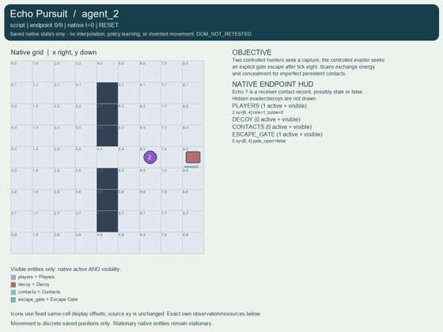
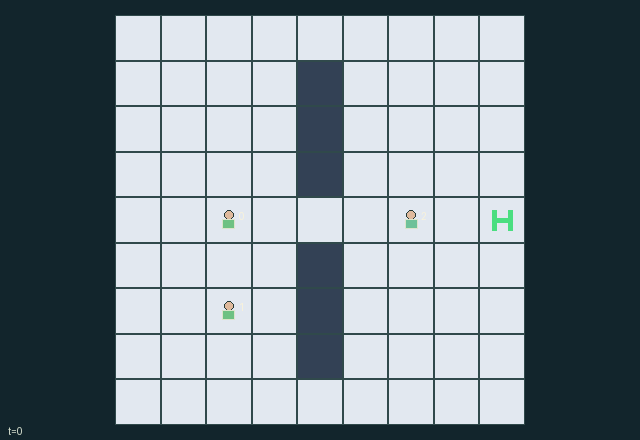

GI167 · Echo Pursuit

Original recording scope: Role view · Mode: Fixed-script demonstration
Additional generated state replay (different trajectory / full-state debug)

Two controlled hunters seek a capture; the controlled evader seeks an explicit gate escape after tick eight. Scans exchange energy and concealment for imperfect persistent contacts.
Identity and original contract
3 independently actionable roles; 8 discrete commands per role; 40 native observation columns per role; original horizon 48 steps. Declared per-step reward range: -23 to 20. Observation regime: partially_observable.
Source SHA-256: 4063107ebba39493e0237a3e79e2b174741ff016dbe2e19c5afac143c66e10f4
The objective, rewards, population, map and horizon remain original. A preview is not a success claim.
Objective and gameplay
Two controlled hunters seek a capture; the controlled evader seeks an explicit gate escape after tick eight. Scans exchange energy and concealment for imperfect persistent contacts.
Costly scans reveal the scanner current position for two ticks while obtaining nearest radius-five echo; a physical decoy can replace the true contact. A relay copies contact information to the teammate without refreshing age. Movement, cloak, decoys and explicit capture alter interception opportunities.
- Hunters and evader all take controlled actions on the native map; characters may share cells, which enables capture attempts.
- Wait recovers one energy up to eight. Scanning/decoy placement costs two; relaying/cloaking costs one.
- A scan records the nearest echo within five cells; ties favor a live decoy. It does not label real versus false contacts.
- A scanner broadcasts its current position for two ticks. Contact records persist for three ticks and relays preserve their remaining lifetime.
- Evader has two decoys, each lasting four ticks; cloak reduces local sight of evader to radius one for two ticks.
- Hunter capture action checks distance at settlement. Escape requires the open gate from tick eight and its explicit action.
- Capture wins a simultaneous capture/escape; otherwise H=48 truncates. Terminal states absorb.
Ending: Explicit hunter tag within Manhattan one after movement causes capture; otherwise explicit evader action at open gate causes escape. Capture takes precedence if simultaneous. H=48 is only truncation, not evader victory.
What this game explores
Information, sensing & communication: Who knows a fact, when it was measured, and whether it was communicated are separate state variables. Test memory or communication using only the same role-visible evidence.
Joint transport & shared access: Positions, load geometry, occupancy and persistent access constrain whose action can succeed next. Distinguish physical handoff, shared controls and simultaneous force from a cosmetic cooperation label.
Team opposition & interception: Cooperation within a team can coexist with opposition between teams. Preserve team membership, capture and possession rules, and report each team's outcomes instead of assuming a single shared return.
These are questions supported by rule structure, not observed learning effects.
Play it: operating walkthrough
crucibles play --game gi167Keep Python running and open its printed address. Select this game, set a seed and press Create session. The game itself is always English.
Assign a role range to Host with Assign / take over, or Assign all roles. Invite a second participant with Create player invitation, then assign a disjoint subset. Every original role is available.
For every owned role choose a legal command and press Queue. Arrow keys / WASD queue a declared directional action for the current role camera when available. Space or Advance one joint step advances everyone together. Non-directional games use the selectors.
Unqueued roles use the labelled untrained uniform-legal policy. Take over or release roles before the next step without resetting. Full-state debug is privileged and permanently logged; role cameras preserve permissions. Close the session to retain logs. Server restart does not restore sessions.
Complete command reference
IDs and English labels exactly match the manifest. Availability depends on role, resources, location and phase. An available action can still have no productive effect.
0·Wait and recover one energy
1·Move north
2·Move east
3·Move south
4·Move west
5·Hunter: scan for two energy; evader: place decoy for two energy and one decoy
6·Hunter: relay own old contact for one energy; evader: cloak for one energy
7·Hunter: attempt adjacent capture; evader: attempt escape through open gate
Roles and capability identifiers
These original role names describe capabilities, not interchangeable skins. Check each owned role's legal selector before planning handoffs.
agent_0·Controlled hunter 0
agent_1·Controlled hunter 1
agent_2·Controlled evader
Information and observation permissions
Map/gate and scan broadcasts are public. Agents use Manhattan local sight two, reduced to one for cloaked evader; active scanner beacons reveal their position globally. Contact records are receiver-private. Scene uses exactly these native masks and never reveals hidden evader or unseen decoy.
The GIF is full-state debug and may reveal hidden entities or private state. Train on obs[agent], not the picture, state tree or another role's private row. Field slices and visibility are in the original manifest.
Reinforcement-learning integration
import jax
from crucibles_jaxmarl import make
env = make("gi167")
key = jax.random.PRNGKey(0)
key, rk, ak, sk = jax.random.split(key, 4)
obs, state = jax.jit(env.reset)(rk)
actions = env.sample_actions(ak, state)
obs, state, rewards, dones, info = jax.jit(env.step_env)(sk, state, actions)
done = dones["__all__"]Observations are float32 vectors of width 40; actions are scalar int32; masks have 8 entries. Supply all 3 roles each transition. Masked sampling is an engineering reference, not a trained learner.
step_env retains terminal data without reset. step performs outer autoreset and keeps terminal data in info["raw_state"] and info["raw_observation"]. Use dones["__all__"] for episode boundaries; separate completion, failure and time limit in analysis.
JIT or vmap equal identities and shapes. Split independent reset, policy and transition keys. Group different shapes explicitly; do not shrink the population or horizon. Host rendering stays outside training.
Training questions and fair evaluation
Define valid completion from the objective before fitting. Preserve original rewards and also report real deliveries/services, losses, resource state, unresolved episodes and per-role returns. Animation is not a reward signal.
Who knows a fact, when it was measured, and whether it was communicated are separate state variables. Test memory or communication using only the same role-visible evidence.
Positions, load geometry, occupancy and persistent access constrain whose action can succeed next. Distinguish physical handoff, shared controls and simultaneous force from a cosmetic cooperation label.
Cooperation within a team can coexist with opposition between teams. Preserve team membership, capture and possession rules, and report each team's outcomes instead of assuming a single shared return.
Compare memory, communication or centralized critics under matched actor information. Declare critic access; keep actor inputs role-filtered. Match partner/opponent distributions, masks, compute and checkpoint selection. Final tests never enter fitting or selection.
Independent training runs or source-pairing blocks are inferential units; episodes from one policy are not independent training replications. Save hashes, keys, versions, device, time and cost. Negative, zero, failed and indeterminate outcomes are valid. No trained checkpoint or target score is supplied.
Classification and evidence
Overlapping editorial labels are reading aids, not proof of novelty, difficulty, strategic equivalence or learning effects.
- Information, sensing & communication
- Evidence
manifest.task.objective: Two controlled hunters seek a capture; the controlled evader seeks an explicit gate escape after tick eight. Scans exchange energy and concealment for imperfect persistent contacts.
- Evidence
manifest.task.interaction: Costly scans reveal the scanner current position for two ticks while obtaining nearest radius-five echo; a physical decoy can replace the true contact. A relay copies contact information to the teammate without refreshing age. Movement, cloak, decoys and explicit capture alter interception opportunities.
- Evidence
manifest.task.observation_access: Map/gate and scan broadcasts are public. Agents use Manhattan local sight two, reduced to one for cloaked evader; active scanner beacons reveal their position globally. Contact records are receiver-private. Scene uses exactly these native masks and never reveals hidden evader or unseen decoy.
- Joint transport & shared access
- Evidence
manifest.task.objective: Two controlled hunters seek a capture; the controlled evader seeks an explicit gate escape after tick eight. Scans exchange energy and concealment for imperfect persistent contacts.
- Evidence
manifest.task.observation_access: Map/gate and scan broadcasts are public. Agents use Manhattan local sight two, reduced to one for cloaked evader; active scanner beacons reveal their position globally. Contact records are receiver-private. Scene uses exactly these native masks and never reveals hidden evader or unseen decoy.
- Evidence
manifest.actions.7: Hunter: attempt adjacent capture; evader: attempt escape through open gate
- Team opposition & interception
- Evidence
manifest.task.objective: Two controlled hunters seek a capture; the controlled evader seeks an explicit gate escape after tick eight. Scans exchange energy and concealment for imperfect persistent contacts.
- Evidence
manifest.task.interaction: Costly scans reveal the scanner current position for two ticks while obtaining nearest radius-five echo; a physical decoy can replace the true contact. A relay copies contact information to the teammate without refreshing age. Movement, cloak, decoys and explicit capture alter interception opportunities.
- Evidence
manifest.task.observation_access: Map/gate and scan broadcasts are public. Agents use Manhattan local sight two, reduced to one for cloaked evader; active scanner beacons reveal their position globally. Contact records are receiver-private. Scene uses exactly these native masks and never reveals hidden evader or unseen decoy.
Source, receipts and preview limits
The additional generated state GIF replays saved untrained legal actions through the original kernel. At most 25 actual endpoints include initial and terminal state; no invented interpolation. It is full-state debug, not the role observation. Where an original scene preview exists, it is displayed first with its own recorded information scope. The two recordings may use different trajectories and views.
Original source, observation slices, manifest and mechanism
Native receipt · Presentation receipt
Engineering passes do not establish learning. Nonzero floating differences remain recorded and undetermined; no new tolerance was introduced. Human scores remain unverified.